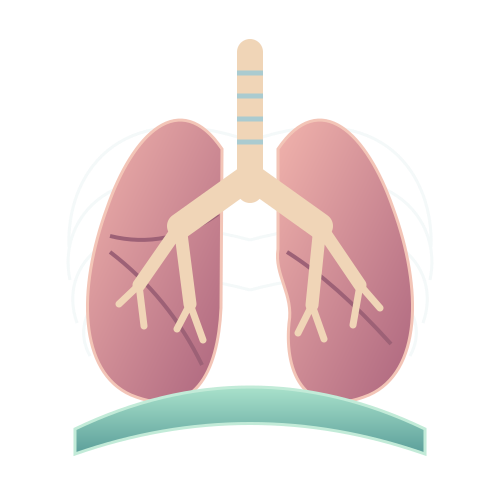

YEAR 9 SCIENCE · LEARN BEFORE YOU ANSWER
Breathing system
Preparation and worked examples
Breathing moves air into and out of the lungs. Gas exchange transfers oxygen and carbon dioxide between air and blood. Respiration is a chemical process in cells that transfers energy from food; it is not another name for moving air. Start by separating these three processes.
Air travels through branching airways to alveoli, small air spaces surrounded by capillaries. During inhalation, contraction of the diaphragm and external intercostal muscles increases thoracic volume, lowering lung pressure relative to the atmosphere so air flows in. Quiet exhalation is mainly passive recoil. Diffusion then moves gases down their partial-pressure gradients across the thin exchange surface.
After running, you may breathe faster and deeper. This helps maintain gas gradients as cells consume more oxygen and make more carbon dioxide. A large total alveolar area and a thin moist barrier support exchange; ventilation and blood flow both help renew the gases on opposite sides.

- Read and explain. Learn the vocabulary and say why the process works.
- Work through an example. Identify the known information, rule and result.
- Investigate, then apply. Return to the practical, game or revision simulator.
Read the symbols and units
Use this reference whenever a letter, subscript or unit in an example is new to you. A subscript is a smaller label, such as ₁ for the first state; an exponent is a power, such as ² for a square.
Airways and anatomy
Understand the ideas
- The trachea branches into bronchi, then smaller bronchioles, which lead to the alveoli.
- The trachea is the windpipe, the airway leading from the throat towards the bronchi.
- Alveoli are microscopic air sacs surrounded by capillaries. They form the main gas-exchange surface.
- The diaphragm is a sheet of muscle forming the floor of the thoracic cavity.
- Cartilage supports the tracheal wall so the airway does not easily collapse during breathing.
- The nasal passages warm and moisten air, while hairs and mucus trap some particles. This is not perfect sterilisation.
- The epiglottis helps cover the laryngeal opening during swallowing, reducing the chance of food entering the trachea.
- The trachea divides into a right and left main bronchus, carrying air into the corresponding lung.
- Conducting airways move air. Most oxygen transfer to blood occurs across the alveolar-capillary barrier.
- A narrowed or blocked bronchiole restricts airflow to the alveoli beyond it, reducing their ventilation.
Follow the worked examples
Try to explain the example first, then open it to compare your reasoning.
Worked example · Which sequence follows inhaled air towards the gas-exchange surfaces?
Result: Trachea → bronchi → bronchioles → alveoli
Reasoning: The trachea branches into bronchi, then smaller bronchioles, which lead to the alveoli.
Explain the reasoning in your own words, then compare it with the practical model. For a calculation, identify the known quantities and units before choosing the rule.
Worked example · What is the trachea commonly called?
Result: The windpipe
Reasoning: The trachea is the windpipe, the airway leading from the throat towards the bronchi.
Explain the reasoning in your own words, then compare it with the practical model. For a calculation, identify the known quantities and units before choosing the rule.
Worked example · What are alveoli?
Result: Tiny air sacs where gases are exchanged with the blood
Reasoning: Alveoli are microscopic air sacs surrounded by capillaries. They form the main gas-exchange surface.
Explain the reasoning in your own words, then compare it with the practical model. For a calculation, identify the known quantities and units before choosing the rule.
Worked example · Where is the diaphragm found?
Result: Below the lungs, separating the chest from the abdomen
Reasoning: The diaphragm is a sheet of muscle forming the floor of the thoracic cavity.
Explain the reasoning in your own words, then compare it with the practical model. For a calculation, identify the known quantities and units before choosing the rule.
Worked example · What is the main role of cartilage in the trachea?
Result: To help keep the airway open
Reasoning: Cartilage supports the tracheal wall so the airway does not easily collapse during breathing.
Explain the reasoning in your own words, then compare it with the practical model. For a calculation, identify the known quantities and units before choosing the rule.
Worked example · How does the nose help prepare inhaled air?
Result: It warms, moistens and helps filter the air
Reasoning: The nasal passages warm and moisten air, while hairs and mucus trap some particles. This is not perfect sterilisation.
Explain the reasoning in your own words, then compare it with the practical model. For a calculation, identify the known quantities and units before choosing the rule.
Worked example · What is the main function of the epiglottis during swallowing?
Result: To help prevent food entering the airway
Reasoning: The epiglottis helps cover the laryngeal opening during swallowing, reducing the chance of food entering the trachea.
Explain the reasoning in your own words, then compare it with the practical model. For a calculation, identify the known quantities and units before choosing the rule.
Worked example · Which statement about the bronchi is correct?
Result: The two main bronchi carry air from the trachea into the lungs
Reasoning: The trachea divides into a right and left main bronchus, carrying air into the corresponding lung.
Explain the reasoning in your own words, then compare it with the practical model. For a calculation, identify the known quantities and units before choosing the rule.
Worked example · Why does air travelling through a bronchus not yet mean that oxygen has entered the blood?
Result: Oxygen must reach a gas-exchange surface and diffuse across it
Reasoning: Conducting airways move air. Most oxygen transfer to blood occurs across the alveolar-capillary barrier.
Explain the reasoning in your own words, then compare it with the practical model. For a calculation, identify the known quantities and units before choosing the rule.
Worked example · A blockage in a small bronchiole would most directly reduce what?
Result: Ventilation of the alveoli supplied by that airway
Reasoning: A narrowed or blocked bronchiole restricts airflow to the alveoli beyond it, reducing their ventilation.
Explain the reasoning in your own words, then compare it with the practical model. For a calculation, identify the known quantities and units before choosing the rule.
Ventilation mechanics
Understand the ideas
- When the diaphragm contracts it flattens, increasing the volume of the thoracic cavity.
- Diaphragm contraction and rib movement increase the volume of the chest during inhalation.
- Air flows down a pressure gradient. Increasing lung volume makes internal pressure slightly lower than atmospheric pressure.
- Relaxation allows the diaphragm to rise as the lungs and chest recoil, reducing lung volume.
- Contraction of the external intercostal muscles raises and expands the rib cage, helping increase chest volume.
- Reducing lung volume increases pressure above atmospheric pressure, driving air out.
- In quiet breathing, relaxation of inspiratory muscles and elastic recoil usually produce exhalation without strong additional muscle contraction.
- Tidal volume measures the air volume of an ordinary breath. It is different from breathing rate.
- Pulling the sheet down increases the surrounding volume. The pressure decrease lets outside air enter the balloons through the tube.
- A rigid jar cannot represent rib movement and intercostal muscles. The model illustrates only some features of ventilation.
Follow the worked examples
Try to explain the example first, then open it to compare your reasoning.
Worked example · What happens to the diaphragm during a normal inhalation?
Result: It contracts and moves downwards, becoming flatter
Reasoning: When the diaphragm contracts it flattens, increasing the volume of the thoracic cavity.
Explain the reasoning in your own words, then compare it with the practical model. For a calculation, identify the known quantities and units before choosing the rule.
Worked example · During normal inhalation, what happens to chest volume?
Result: It increases
Reasoning: Diaphragm contraction and rib movement increase the volume of the chest during inhalation.
Explain the reasoning in your own words, then compare it with the practical model. For a calculation, identify the known quantities and units before choosing the rule.
Worked example · Why does air move into the lungs during inhalation?
Result: Pressure inside the lungs becomes slightly lower than atmospheric pressure
Reasoning: Air flows down a pressure gradient. Increasing lung volume makes internal pressure slightly lower than atmospheric pressure.
Explain the reasoning in your own words, then compare it with the practical model. For a calculation, identify the known quantities and units before choosing the rule.
Worked example · During quiet exhalation, what normally happens to the diaphragm?
Result: It relaxes and moves upwards into a more domed shape
Reasoning: Relaxation allows the diaphragm to rise as the lungs and chest recoil, reducing lung volume.
Explain the reasoning in your own words, then compare it with the practical model. For a calculation, identify the known quantities and units before choosing the rule.
Worked example · What do the external intercostal muscles do during inhalation?
Result: They contract, helping move the ribs up and out
Reasoning: Contraction of the external intercostal muscles raises and expands the rib cage, helping increase chest volume.
Explain the reasoning in your own words, then compare it with the practical model. For a calculation, identify the known quantities and units before choosing the rule.
Worked example · Which pressure change is associated with air flowing out during exhalation?
Result: Pressure inside the lungs becomes slightly greater than atmospheric pressure
Reasoning: Reducing lung volume increases pressure above atmospheric pressure, driving air out.
Explain the reasoning in your own words, then compare it with the practical model. For a calculation, identify the known quantities and units before choosing the rule.
Worked example · Why is quiet exhalation usually described as largely passive?
Result: Elastic recoil helps air leave after inspiratory muscles relax
Reasoning: In quiet breathing, relaxation of inspiratory muscles and elastic recoil usually produce exhalation without strong additional muscle contraction.
Explain the reasoning in your own words, then compare it with the practical model. For a calculation, identify the known quantities and units before choosing the rule.
Worked example · What is tidal volume?
Result: The volume of air moved in or out during one normal breath
Reasoning: Tidal volume measures the air volume of an ordinary breath. It is different from breathing rate.
Explain the reasoning in your own words, then compare it with the practical model. For a calculation, identify the known quantities and units before choosing the rule.
Worked example · In a sealed bell-jar lung model, the rubber sheet is pulled down. Why do the balloons inflate?
Result: The enclosed volume increases, lowering pressure so air enters the balloons
Reasoning: Pulling the sheet down increases the surrounding volume. The pressure decrease lets outside air enter the balloons through the tube.
Explain the reasoning in your own words, then compare it with the practical model. For a calculation, identify the known quantities and units before choosing the rule.
Worked example · Which is an important limitation of a simple bell-jar lung model?
Result: Its rigid jar does not show the movement of a real rib cage
Reasoning: A rigid jar cannot represent rib movement and intercostal muscles. The model illustrates only some features of ventilation.
Explain the reasoning in your own words, then compare it with the practical model. For a calculation, identify the known quantities and units before choosing the rule.
Alveoli and diffusion
Understand the ideas
- Oxygen diffuses from alveoli, where its concentration is higher, into the blood arriving in pulmonary capillaries.
- Blood arriving at the lungs has more carbon dioxide than alveolar air, so carbon dioxide diffuses into the alveoli.
- Many alveoli provide a very large surface area, supporting rapid diffusion of respiratory gases.
- The thin alveolar-capillary barrier gives gases a short path between air and blood.
- Continuous blood flow helps maintain gradients by supplying oxygen-poor blood and removing blood that has gained oxygen.
- Ventilation replenishes oxygen in alveoli and removes carbon dioxide, helping maintain gradients for diffusion.
- A thicker barrier gives gases a longer diffusion path and usually reduces the rate of exchange.
- Gases dissolve in the thin moist lining before diffusing across the alveolar surface.
- Effective exchange needs both ventilation and perfusion. Poor blood flow limits how much oxygen can be carried away.
- Oxygen diffuses from alveolar air into blood while carbon dioxide diffuses from blood into alveoli. Each follows its own gradient.
Follow the worked examples
Try to explain the example first, then open it to compare your reasoning.
Worked example · In healthy lungs, which way does oxygen diffuse across the alveolar wall?
Result: From alveolar air into capillary blood
Reasoning: Oxygen diffuses from alveoli, where its concentration is higher, into the blood arriving in pulmonary capillaries.
Explain the reasoning in your own words, then compare it with the practical model. For a calculation, identify the known quantities and units before choosing the rule.
Worked example · Which way does carbon dioxide normally diffuse at the alveoli?
Result: From capillary blood into alveolar air
Reasoning: Blood arriving at the lungs has more carbon dioxide than alveolar air, so carbon dioxide diffuses into the alveoli.
Explain the reasoning in your own words, then compare it with the practical model. For a calculation, identify the known quantities and units before choosing the rule.
Worked example · Why are there so many alveoli in the lungs?
Result: To provide a large total surface area for gas exchange
Reasoning: Many alveoli provide a very large surface area, supporting rapid diffusion of respiratory gases.
Explain the reasoning in your own words, then compare it with the practical model. For a calculation, identify the known quantities and units before choosing the rule.
Worked example · Why are alveolar and capillary walls very thin?
Result: To create a short diffusion distance
Reasoning: The thin alveolar-capillary barrier gives gases a short path between air and blood.
Explain the reasoning in your own words, then compare it with the practical model. For a calculation, identify the known quantities and units before choosing the rule.
Worked example · How does a good blood supply help alveolar gas exchange?
Result: It brings carbon dioxide and carries oxygen away, maintaining concentration gradients
Reasoning: Continuous blood flow helps maintain gradients by supplying oxygen-poor blood and removing blood that has gained oxygen.
Explain the reasoning in your own words, then compare it with the practical model. For a calculation, identify the known quantities and units before choosing the rule.
Worked example · How does ventilation help maintain oxygen diffusion into the blood?
Result: It refreshes alveolar air so its oxygen level remains relatively high
Reasoning: Ventilation replenishes oxygen in alveoli and removes carbon dioxide, helping maintain gradients for diffusion.
Explain the reasoning in your own words, then compare it with the practical model. For a calculation, identify the known quantities and units before choosing the rule.
Worked example · Which change would usually slow gas exchange across an alveolar wall?
Result: An increase in the thickness of the diffusion barrier
Reasoning: A thicker barrier gives gases a longer diffusion path and usually reduces the rate of exchange.
Explain the reasoning in your own words, then compare it with the practical model. For a calculation, identify the known quantities and units before choosing the rule.
Worked example · Why is a moist alveolar surface useful?
Result: Respiratory gases can dissolve before crossing the surface
Reasoning: Gases dissolve in the thin moist lining before diffusing across the alveolar surface.
Explain the reasoning in your own words, then compare it with the practical model. For a calculation, identify the known quantities and units before choosing the rule.
Worked example · An alveolus is ventilated normally but receives very little blood flow. What is the likely result?
Result: Less oxygen can be transferred into circulating blood from that alveolus
Reasoning: Effective exchange needs both ventilation and perfusion. Poor blood flow limits how much oxygen can be carried away.
Explain the reasoning in your own words, then compare it with the practical model. For a calculation, identify the known quantities and units before choosing the rule.
Worked example · Why does blood leave the lungs with more oxygen but less carbon dioxide than when it arrived?
Result: The two gases diffuse in different directions down their own gradients
Reasoning: Oxygen diffuses from alveolar air into blood while carbon dioxide diffuses from blood into alveoli. Each follows its own gradient.
Explain the reasoning in your own words, then compare it with the practical model. For a calculation, identify the known quantities and units before choosing the rule.
Respiration and exercise
Understand the ideas
- Breathing is ventilation. Cellular respiration is a set of chemical reactions in cells that release usable energy.
- Aerobic respiration uses glucose and oxygen and produces carbon dioxide and water, releasing energy in the process.
- Many body cells carry out aerobic respiration. The lungs supply oxygen but are not the only site of respiration.
- Increased ventilation supports the greater gas-exchange demands of active, respiring muscles.
- Both more breaths per minute and deeper breaths can increase minute ventilation.
- Minute ventilation = breathing rate × tidal volume = 12 × 0.5 = 6 litres per minute.
- Minute ventilation is the total volume of air moved into or out of the lungs each minute. Air is a mixture of gases, so this does not mean that 8 litres of oxygen is absorbed.
- For the same minute ventilation, fewer breaths require a larger volume per breath: 0.8 L compared with 0.4 L.
- Oxygen demand and carbon dioxide removal can remain elevated during recovery while the body returns towards resting conditions.
- Carbon dioxide reacts with limewater to form a cloudy precipitate. Exhaled air contains more carbon dioxide than inhaled air.
Follow the worked examples
Try to explain the example first, then open it to compare your reasoning.
Worked example · What is the difference between breathing and cellular respiration?
Result: Breathing moves air; cellular respiration releases energy in cells
Reasoning: Breathing is ventilation. Cellular respiration is a set of chemical reactions in cells that release usable energy.
Explain the reasoning in your own words, then compare it with the practical model. For a calculation, identify the known quantities and units before choosing the rule.
Worked example · Which word equation summarises aerobic respiration?
Result: Glucose + oxygen → carbon dioxide + water
Reasoning: Aerobic respiration uses glucose and oxygen and produces carbon dioxide and water, releasing energy in the process.
Explain the reasoning in your own words, then compare it with the practical model. For a calculation, identify the known quantities and units before choosing the rule.
Worked example · Where does aerobic cellular respiration occur?
Result: In living cells throughout the body
Reasoning: Many body cells carry out aerobic respiration. The lungs supply oxygen but are not the only site of respiration.
Explain the reasoning in your own words, then compare it with the practical model. For a calculation, identify the known quantities and units before choosing the rule.
Worked example · Why does breathing rate usually increase during exercise?
Result: Working muscles need more oxygen and produce more carbon dioxide
Reasoning: Increased ventilation supports the greater gas-exchange demands of active, respiring muscles.
Explain the reasoning in your own words, then compare it with the practical model. For a calculation, identify the known quantities and units before choosing the rule.
Worked example · Which combination usually increases the volume of air ventilated each minute during exercise?
Result: A higher breathing rate and a larger tidal volume
Reasoning: Both more breaths per minute and deeper breaths can increase minute ventilation.
Explain the reasoning in your own words, then compare it with the practical model. For a calculation, identify the known quantities and units before choosing the rule.
Worked example · A student takes 12 breaths per minute with a tidal volume of 0.5 L. What is minute ventilation?
Result: 6 L/min
Reasoning: Minute ventilation = breathing rate × tidal volume = 12 × 0.5 = 6 litres per minute.
Explain the reasoning in your own words, then compare it with the practical model. For a calculation, identify the known quantities and units before choosing the rule.
Worked example · What does a minute ventilation of 8 litres per minute mean?
Result: A total of 8 litres of air is moved into or out of the lungs each minute
Reasoning: Minute ventilation is the total volume of air moved into or out of the lungs each minute. Air is a mixture of gases, so this does not mean that 8 litres of oxygen is absorbed.
Explain the reasoning in your own words, then compare it with the practical model. For a calculation, identify the known quantities and units before choosing the rule.
Worked example · Two students each ventilate 8 L of air per minute. One takes 10 breaths/min and the other 20 breaths/min. Which statement is correct?
Result: The first student has a larger tidal volume
Reasoning: For the same minute ventilation, fewer breaths require a larger volume per breath: 0.8 L compared with 0.4 L.
Explain the reasoning in your own words, then compare it with the practical model. For a calculation, identify the known quantities and units before choosing the rule.
Worked example · Why can breathing stay faster than resting level for a while after vigorous exercise?
Result: Recovery processes still require oxygen and carbon dioxide removal
Reasoning: Oxygen demand and carbon dioxide removal can remain elevated during recovery while the body returns towards resting conditions.
Explain the reasoning in your own words, then compare it with the practical model. For a calculation, identify the known quantities and units before choosing the rule.
Worked example · Which observation most directly shows that exhaled air contains carbon dioxide?
Result: It turns limewater cloudy
Reasoning: Carbon dioxide reacts with limewater to form a cloudy precipitate. Exhaled air contains more carbon dioxide than inhaled air.
Explain the reasoning in your own words, then compare it with the practical model. For a calculation, identify the known quantities and units before choosing the rule.
Health and protection
Understand the ideas
- Sticky mucus traps particles and pathogens, helping prevent them reaching the delicate gas-exchange surfaces.
- Cilia are tiny hair-like projections that beat to move mucus and trapped material towards the throat.
- Damaged cilia reduce mucus clearance, allowing pathogens and particles to remain in the airways longer.
- Emphysema damages alveolar walls and elastic tissue, reducing gas-exchange surface area and making exhalation harder.
- Asthma can narrow the airways through smooth-muscle contraction, inflammation and extra mucus, restricting airflow.
- Carbon monoxide binds haemoglobin strongly, reducing the amount available to carry oxygen effectively.
- Nicotine is addictive. Other smoke constituents, including carcinogens and carbon monoxide, contribute to different health harms.
- Ventilation and gas exchange are different processes. Normal chest movement cannot fully compensate for loss of exchange surface.
- Educational simulations illustrate mechanisms. Diagnosis requires appropriate medical assessment and, when indicated, clinical measurements.
- Mucus and cilia provide partial protection, but smoke can damage them and contains gases and particles they cannot fully remove.
Follow the worked examples
Try to explain the example first, then open it to compare your reasoning.
Worked example · What is the function of mucus in the airways?
Result: To trap particles and some pathogens
Reasoning: Sticky mucus traps particles and pathogens, helping prevent them reaching the delicate gas-exchange surfaces.
Explain the reasoning in your own words, then compare it with the practical model. For a calculation, identify the known quantities and units before choosing the rule.
Worked example · What do cilia in the airways do?
Result: Move mucus towards the throat
Reasoning: Cilia are tiny hair-like projections that beat to move mucus and trapped material towards the throat.
Explain the reasoning in your own words, then compare it with the practical model. For a calculation, identify the known quantities and units before choosing the rule.
Worked example · Why can damage to airway cilia increase the risk of chest infections?
Result: Mucus and trapped pathogens are cleared less effectively
Reasoning: Damaged cilia reduce mucus clearance, allowing pathogens and particles to remain in the airways longer.
Explain the reasoning in your own words, then compare it with the practical model. For a calculation, identify the known quantities and units before choosing the rule.
Worked example · How can emphysema reduce the efficiency of gas exchange?
Result: Damage to alveolar walls reduces the available surface area
Reasoning: Emphysema damages alveolar walls and elastic tissue, reducing gas-exchange surface area and making exhalation harder.
Explain the reasoning in your own words, then compare it with the practical model. For a calculation, identify the known quantities and units before choosing the rule.
Worked example · What commonly happens to airways during an asthma attack?
Result: They narrow because of muscle tightening, inflammation and mucus
Reasoning: Asthma can narrow the airways through smooth-muscle contraction, inflammation and extra mucus, restricting airflow.
Explain the reasoning in your own words, then compare it with the practical model. For a calculation, identify the known quantities and units before choosing the rule.
Worked example · Why can carbon monoxide exposure reduce oxygen transport?
Result: Carbon monoxide binds strongly to haemoglobin
Reasoning: Carbon monoxide binds haemoglobin strongly, reducing the amount available to carry oxygen effectively.
Explain the reasoning in your own words, then compare it with the practical model. For a calculation, identify the known quantities and units before choosing the rule.
Worked example · Which substance in tobacco smoke is strongly associated with dependence?
Result: Nicotine
Reasoning: Nicotine is addictive. Other smoke constituents, including carcinogens and carbon monoxide, contribute to different health harms.
Explain the reasoning in your own words, then compare it with the practical model. For a calculation, identify the known quantities and units before choosing the rule.
Worked example · A person has reduced alveolar surface area but normal movement of the ribs. Why might exercise still be difficult?
Result: Less gas-exchange capacity can limit oxygen delivery despite continued ventilation
Reasoning: Ventilation and gas exchange are different processes. Normal chest movement cannot fully compensate for loss of exchange surface.
Explain the reasoning in your own words, then compare it with the practical model. For a calculation, identify the known quantities and units before choosing the rule.
Worked example · Why should a breathing simulator not be used to diagnose asthma?
Result: A teaching model cannot assess a person's symptoms or replace clinical tests
Reasoning: Educational simulations illustrate mechanisms. Diagnosis requires appropriate medical assessment and, when indicated, clinical measurements.
Explain the reasoning in your own words, then compare it with the practical model. For a calculation, identify the known quantities and units before choosing the rule.
Worked example · Why is avoiding smoking useful even though airways have protective mucus and cilia?
Result: The protective system can be damaged or overwhelmed and does not remove every harmful substance
Reasoning: Mucus and cilia provide partial protection, but smoke can damage them and contains gases and particles they cannot fully remove.
Explain the reasoning in your own words, then compare it with the practical model. For a calculation, identify the known quantities and units before choosing the rule.
Evidence and investigations
Understand the ideas
- There are two 30-second intervals in a minute, so 8 × 2 = 16 breaths per minute.
- Nitrogen is the largest component of inhaled and exhaled air. Exhaled air still contains nitrogen and a substantial amount of oxygen.
- Only some inhaled oxygen is taken up by the blood. Exhaled air typically contains about 16% oxygen compared with about 21% in air.
- Warm, moist exhaled air can cool on a surface and form liquid water droplets by condensation.
- The dependent variable is the measured response: breathing rate. Exercise intensity is the independent variable.
- Counts depend on both rate and time. Use a standard interval or convert all measurements to breaths per minute.
- A longer interval between successive breaths means fewer breaths per unit time. Peak spacing alone does not determine tidal volume.
- On a volume trace, greater peak-to-trough amplitude indicates larger breaths; unchanged spacing indicates a similar rate.
- Bulk air movement and molecular diffusion are distinct. Exchange rate also depends on surface area, distance, gradients and blood supply.
- Repeated, controlled measurements help assess variability and support a more reliable conclusion without selecting only preferred results.
Follow the worked examples
Try to explain the example first, then open it to compare your reasoning.
Worked example · A student counts 8 breaths in 30 seconds. What is the estimated breathing rate?
Result: 16 breaths per minute
Reasoning: There are two 30-second intervals in a minute, so 8 × 2 = 16 breaths per minute.
Explain the reasoning in your own words, then compare it with the practical model. For a calculation, identify the known quantities and units before choosing the rule.
Worked example · Which gas makes up the largest proportion of both inhaled and exhaled air?
Result: Nitrogen
Reasoning: Nitrogen is the largest component of inhaled and exhaled air. Exhaled air still contains nitrogen and a substantial amount of oxygen.
Explain the reasoning in your own words, then compare it with the practical model. For a calculation, identify the known quantities and units before choosing the rule.
Worked example · Which statement about oxygen in exhaled air is correct?
Result: Exhaled air still contains oxygen, but usually a smaller proportion than inhaled air
Reasoning: Only some inhaled oxygen is taken up by the blood. Exhaled air typically contains about 16% oxygen compared with about 21% in air.
Explain the reasoning in your own words, then compare it with the practical model. For a calculation, identify the known quantities and units before choosing the rule.
Worked example · Which observation is consistent with exhaled air containing water vapour?
Result: Condensation forms on a cool surface breathed onto
Reasoning: Warm, moist exhaled air can cool on a surface and form liquid water droplets by condensation.
Explain the reasoning in your own words, then compare it with the practical model. For a calculation, identify the known quantities and units before choosing the rule.
Worked example · In an investigation of exercise intensity and breathing rate, what should be the dependent variable?
Result: The measured breathing rate
Reasoning: The dependent variable is the measured response: breathing rate. Exercise intensity is the independent variable.
Explain the reasoning in your own words, then compare it with the practical model. For a calculation, identify the known quantities and units before choosing the rule.
Worked example · Why should students use the same counting interval when comparing raw breath counts?
Result: Different intervals can produce different counts even at the same breathing rate
Reasoning: Counts depend on both rate and time. Use a standard interval or convert all measurements to breaths per minute.
Explain the reasoning in your own words, then compare it with the practical model. For a calculation, identify the known quantities and units before choosing the rule.
Worked example · A breathing trace shows regular peaks getting farther apart. What does that suggest?
Result: Breathing rate is decreasing
Reasoning: A longer interval between successive breaths means fewer breaths per unit time. Peak spacing alone does not determine tidal volume.
Explain the reasoning in your own words, then compare it with the practical model. For a calculation, identify the known quantities and units before choosing the rule.
Worked example · A breathing-volume trace has a larger peak-to-trough amplitude but the same spacing between breaths. What changed?
Result: Tidal volume increased while breathing rate stayed similar
Reasoning: On a volume trace, greater peak-to-trough amplitude indicates larger breaths; unchanged spacing indicates a similar rate.
Explain the reasoning in your own words, then compare it with the practical model. For a calculation, identify the known quantities and units before choosing the rule.
Worked example · Why can a model that shows moving air particles not by itself show the rate of gas diffusion into blood?
Result: Ventilation moves air in bulk, while diffusion depends on gradients and the exchange barrier
Reasoning: Bulk air movement and molecular diffusion are distinct. Exchange rate also depends on surface area, distance, gradients and blood supply.
Explain the reasoning in your own words, then compare it with the practical model. For a calculation, identify the known quantities and units before choosing the rule.
Worked example · A class finds faster breathing after exercise in one trial. What would strengthen the evidence?
Result: Repeating controlled trials and using the same measurement method
Reasoning: Repeated, controlled measurements help assess variability and support a more reliable conclusion without selecting only preferred results.
Explain the reasoning in your own words, then compare it with the practical model. For a calculation, identify the known quantities and units before choosing the rule.